(Oharra: www.matroska.org.-tik kopiatuta)
Matroska-k helburu bezala Multimedia Edukiontzi Heuskarri Estandarra bihurtzea du. MCF izeneko egitasmotik eratorria da, baina, berarengandik oso bereizita ere bai EBML-an (Extensible Binary Meta Language) ohinarriturik dagoelako, XML-tik eratorritako binario bat. EBML-k Matroska Garapen Taldeari aurrerapen garrantzitsuak irabaztea ahalbidetzen dio etorkizuneko heuskarri hedapen arloan, agiri sostengua aztertzaile zaharretan hautsi gabe.
Argibide gehiago behar baduzu mesedez zuzendu zaitez hona: Matroska-ren webgunea.
mkvmerge eta mkvmerge EIG (edo mmg bakarrik) Moritz Bunkus-ek sorturiko bi programa dira. Hauek mkvtoolnix paketearen atal dira. mkvmerge-k multimedia agiri pilo bat irakurri eta bere edukiak Matroska agiri barnean jarri ditzake. Zorigaitzez hau agindu lerro programa bat da, eta denak ez dira eroso sentitzen agindu lerroarekin lan egin beharrarekin. Hemen sartzen da jokoan mkvmerge EIG. Hau EIG bat da erabiltzaileari mkvmerge-rako ikusizko baina indartsua den interfaze bat eskaintzen diona.
Bi programak daude eskuragarri bai Windows eta bai GNU/Linux eta beste Unix eratorrientzat. Programak GPL baimena du, hortaz iturburu kodea eskuragarri dago interesaturik dagoen edonorentzat.
Betik aurkitu ahal duzu mkvtoolnix-ren azken bertsioa hemen: Moritz Bunkus-en webgunea. Windows erabiltzaileek jeitsi beharko dituzte DLL runtime eta mkvtoolnix binarioak. Linux/Unix erabiltzaileek zihurrenik iturburuak jeitsi eta mkvtoolnix beraiek bilduko dute.
Gida hau tresna honen EIG atalari buruzkoa da bakarrik. Agindu lerro aukera guztiak xehetasunez azaltzen dira mkvmerge-ren orrialde nagusian/HTML orrialdean.
(Oharra: Atal honek ez du bilketa eta ezarpena barne hartzen.
mkvmerge-ren agiritza eta
IRAKURRI agiriak daude
mkvtoolnix paketean.)
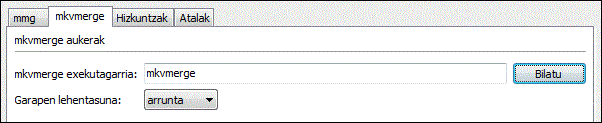
1 Irudia: Erabili botoi hau mkvmerge
programaren helburua hautatzeko.
mmg-ek jakitea behar duen gauza bakarra mkvmerge binarioaren helbidea da. Egoera arrunt batean berezgaitasunez aurkituko du. Baina bestela zeuk hautatu dezakezu erabiltzeko binarioa Ezarpenak hegatsean.
mkvmerge-k bereizketa zorrotza egiten du agiri eta bide artean. Sarrera agiri batek arrunt bide bat edo gehiago izaten ditu. mkvmerge-k gutxienez behar ditu sarrera agiri bat eta sortu behar duen Matroska agiriaren agiri izena edozein lan egin ahal izan aurretik. Gutxiengo ezarpen aukera hauekin hasita erabiltzaileak ahal du, sarrera agiri gehiago gehitu, bide bakoitzarentzako aukera aurreratuak hautatu, aukera orokor gehiago ezarri, etab.
Ohiko ohinarrizko urratsak dira:
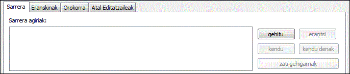
2 Irudia: Erabili botoi hauek agiriak
gehitzeko eta kentzeko.
mmg abiarazten denean lehen eta zihurrenik garrantzitsuena den hegatsa erakusten du: sarrera hegatsa. Hemen lau gai ezberdin ikusi ditzakezu. Goreneko sarrera kutxak sarrera agiri guztiak zerrendatzen ditu. Kutxa honen azpian unean hautaturiko sarrera agiria-ri ezartzeko aukerak daude.
2 Irudiak hiru botoi erakusten ditu goiko zerrenda kutxaren eskuinean, hauek erabili daitezke agiriak gehietzeko gehitu eta erantsi botiak erabiliz eta hautaturiko sarrera kentzeko kendu botoiarekin.
Ezberdintasun bat dago gehitu eta erantsi agiri bat artean. Arrunt, gehitutako agiri guztien bideak Matroska emaitz agiriaren barne kideturik jartzen dira. Hau erabilgarria da baduzu, adibidez, bideo bide bat, audio bide bat edo gehiago eta azpidatzi bide bat edo gehiago. Guztiak dute denbora-kode bera aldiberean irakurriak izateko.
Erantsi agiri bat beste aldean eragingo du bigarren agiriko bide guztiak aurretik gehitutako agiriari erantsiko zaizkiola. Honela bide hauetako edukia bata bestearen ondoren irakurriko da. Mota berekoak diren bideak bakarrik kateaduratu ditzakezu (bideoa bideo bideetara, etab.), kodek bera dutenak (adib. MP3 MP3-ra baina ez MP3 AC3-ra) eta parametro berdinak (adib. lagin neurria berdina izan behar da).
gehitutako agiri bat erantsitako
batetik bere izenaz bereiztu dezakezu.
Gehitutako agiriak eta bideak "++>"-rekin hasten dira.
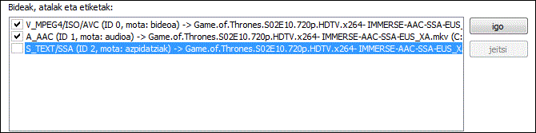
3 Irudia: Gaitutako bi bide eta ezgaitutako bat.
Ezgaitutako bidea ez da irteera agirian kopiatuko.
Erabiltzaileak gutxienez sarrera agiri bat gehitzen duenean goiko zerrenda kutxan bigarren zerrenda kutxak eskuragarri dauden bide guztiak erakutsiko ditu. Bide bakoitza berez gaitzen da eta emaitz agirian multiplexatuko dira. Horrela ere, hau aldatu dezakezu klik arrunt bat eginez eskuineko hauta kutxatilan bidearen izenaren aurretik dagoena bigarren zerrenda kutxan. Hau 3 irudian erakusten da.
Bide hauetako bakoitzarentzat erabiltzaileak bide aukera bereiziak hautatu ditzake bide zerrenda azpiko sarrera kutxekin eta hauta kutxatilekin. Aukera hauek hurrengo ataletan azaltzen dira.
Bide zerrendaren eskuinean bi botoi daude, hauekin irteera agirian
bideek izango duten hurrenkera agindu dezakezu. igo eta jeitsi
sakatuz hautaturiko bidea norabide egokian mugitzen da. Muga gehiago daude
erantsitako bideak mugitzerakoan ("++>"-rekin hasten direnak)
erantsitako bide bat bezala ezin da lehen bidea izan, etab.
Behin erabiltzaileak sarrera agiri bat gehitu eta hautatutakoan
agiri bereizi honi ezartzeko aukerak ezarri ditzake. Oraingoz hiru aukera daude,
eta hauek Matroska agirientzat bakarrik daude eskuragarri:
Atalik ez, Eranskinik ez eta Etiketarik ez.
Aukera hauek mkvmerge-ri esaten diote ez kopiatzeko
atalik / eranskinik / etiketarik uneko iturburu agiritik.
Atalei buruzko argibide gehiago aurkitu daiteke agiri honetako atal editatzailea zatian eta mkvmerge-ren agiritzan.
Hautaturiko bide motaren arabera (audioa, bideoa, azpidatzia) eta baita bidearen edukien arabera bidearen aukera bereizi azpiezarpen bakarra dago eskuragarri. Aukera hauek bi azpi-orrialdeetan hedatzen dira. Daude Bidearen aukera orokorrak eta heuskarri aukera bereiziak.
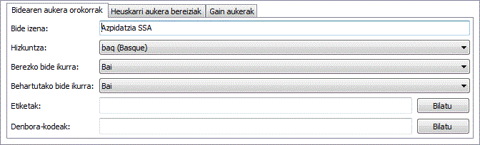
4 Irudia: Bide mota guztientzako aukerak
Oharra: Erabiltzaileak ezeztatzen ez badu mkvmergek bide ezarpenak sarrera agiritik kopiatuko ditu iturburu heuskarriak argibide horiek sostengatzen baditu, edo berezko balio sentikorrak erabiliko ditu.
Aukera orokor eskuragarriak dira:
Bide izena: Erabiltzaileak bidearen izena ezarri dezake.
Izen hau modu-askeko katea da. Ariketa adibideak izan daitezke
'zuzendariaren aipamenak' edo 'ikuskizun handia Donostian'.
Ohartu izen hauek ez direla filmaren izenburua jartzeko!Hizkuntza: Erabiltzaileak bide bakoitzaren hizkuntza hautatu
dezake zer motakoa den axola gabe. Hizkuntza izen hau ISO639-2 hizkuntza kodean
kodeatua dago. Hedagarri kutxak ISO639-2 kode guztiak ditu hortaz erabiltzailea
ez kezkatu behar kode okerra hautzearekin.Cue-ak: cue-ak Matroskarentzat aurkibideak AVI agirientzat direna dira.
Hauek giltza framerako loturak dituzte. Arrunt aukera hau 'berez' balioan utzi behar da.
mkvmergek berezgaitasunez hautatuko du emandako bide motarentzat hoberena den metodoa.
Bideen azalpen osoa mkvmerge-ren agiritzan aurkitu daiteke.Egin berezko bidea: Matroskak ezagutzen du irakurketan zehar irakurgailuari
bide bereizi bat hobetsi behar dela esaten dion ikurra erabiltzaileak ez badu ezer hautatzen.
Noski bide mota bakoitzak bere berezko bidea du - adib. berezko audio bidea Ingelerazko
bat da, eta berezko azpidatzi bidea Frantzierazko bat da. Ez bada biderik ezartzen berezko
bidea izateko mkvmergek aurkitzen duen mota bakoitzeko lehen bidea sustatuko du
berezko bidea izateko. Hau egonkorra da multimedia irakurgailu askoren jokabidearekin.Etiketak: Bide bakoitzarentzako XML etiketa agiri bat sortu dezakezu.
Etiketa guztien azalpen oso baterako mesedez jo adibide agirira eta
Denbora-kodeak: Arrunt mkvmerge-k frame bakoitzarentzako
denbora-kodeak iturburu agirik eratorri ditzake, baina baita ere irakurri eta
erabili ditzake denbora-kodeak kanpoko idazki agiri batetik, honen izena hemen
adierazi dezakezu. Ezaugarri hau ezaugarri oso aurreratu bat da.
Erabiltzaile gehienek sarrera hau hutsik utzi behar dute..
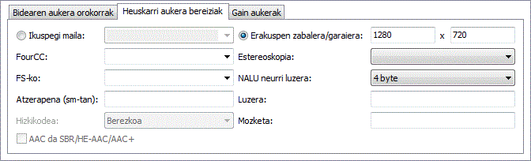
5 Irudia: Ohiko aukerak bideo bide batentzat
Heuskarri aukerak bereiziak dira:
Ikuspegi maila: Aukera honekin erabiltzaileak irakurketan
erabili behar den ikuspegi maila ezarri dezake. Berezko filma kodeatu zen
ikuspegi maila da baina aldatu daiteke, adib. kodeaketa anamorfikoentzat.
EIG-k itxaroten duen heuskarria zenbaki hamarren bat (adib. '2.33')
edo zaitiki bat da (adib. '16/9').
FourCC: Matroskak arrunt ez du biltegiratzen Four-CC,
erabilitako kodeka ezagutzeko beste edukiontzi batzuek erabiltzen dutena.
Matroskak bere heuskarria du, CodecID deitua, baina honek
AVI bateragarritasun modua ere badu. Modu honetan FourCC ere biltegiratzen da.
Aukera honekin FourCC behartu daiteke balio ezberdin batera. Horrela ere, ezin duzu
mkvmerge-k erabilitako CodecID-a aldatu.
Estereo modua: Hau sasi hiru neurriko irudiak eskaintzen
dituen teknologia bat aldiberean kokapen apur bat ezberdinetik filmatu
diren bi bide irakurketarekin. Begi bakoitzak bide hauetako bat bakarrik
ikusten du. Honi estereo modua deitzen zaio.
Erabiltzaile gehienek hutsik utzi behar dute.
FS-ko: frame segunduko zenbatekoa
AVC/h.264 bideo bideentzat. AVC/h.264 ohinarrizko jario bat gehitzen duzunean
mkvmerge-ri esan behar zaio bideo hau zenbat frame segunduko neurriarekin
grabatu zen, zeren argibide atal hau ez dago eskuragarri ohinarrizko jarioetan.
Ez baduzu ezer hautatzen mkvmerge-k berez 25-en jarriko du.
Zenbaki hamarren bat ere sartu dezakezu (adib. 29.97) edo zatiki bat
(adib. 30000/1001).
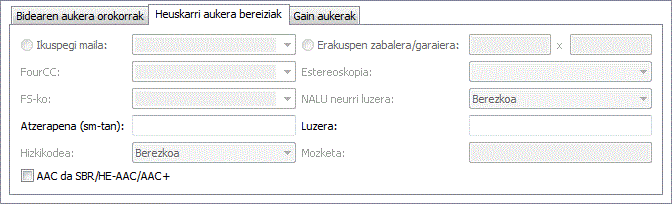
6 Irudia: Ohiko aukerak audio bide batentzat
Atzerapena (sm-tan): Batzuetan audioa eta bideoa ez daude egoki aldiberetuta.
Aukera honekin erabiltzaileak edozein bideren denbora-kodeak orekatu ditzake emaniko
zenbateko batean, aurreratuz edo atzeratuz. Hemen sartzen duzun zenbatekoa denbora-kode
bakoitzari Luzera ezaugarria ezarri ondoren gehitzen zaion
segundumilaen zenbatekoa da (ikusi behean).
Luzera: Batzuetan audioa eta bideoa apurka hurrundu egiten dira
irakurketan zehar. Hau zuzendu daiteke ezaugarri bat emanez mkvmergek
denbora-kodeak zenbat luzatu behar dituen esanez. Ez bada ezer sartzen '1.0' hartzen da,
honek ez dituelarik denbora-kodeak aldatzen.
Atzerapena gehitu aurretik ezartzen da
(ikusi goian).
AAC da SBR/HE-AAC/AAC+: 'eraginkoratasun handiko AAC' deituriko
teknologia berriak alde txar batzuk ditu .AAC
agirietan biltegiratua denean: ezinezkoa da agiri hauen HE-AAC atala atzematea.
Hortaz erabiltzaileak eskuz hautatu behar du aukera hau ezartzen bada.
Mesedez ohartu arazo hau ez dela gertatzen .MP4 agirietan
biltegiratutako HE-AAC-rekin.
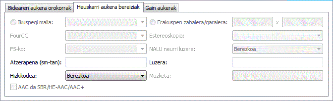
7 Irudia: Ohiko aukerak idazki azpidatzi bide batentzat
Konpresioa: Matroskak erabide indartsu bat du bideak galera
gabeko konpresio algoritmoekin konprimitzeko. Konpresio hauek emaniko edozein
bideri ezarri ahal zaizkio, baina irakurgailu batzuk bakarrik sostengatzen dute
hau VobSub bideentzat. Hemen da hau erabilgarrien. Beste bideak, audio eta bideo
bideak bereziki, jadanik konprimiturik daude hortaz konpresio gehigarri batek
ez du inolako emaitzik izango. VobSub-erako %30 inguruko irabazi gehigarri bat
lortu dezakezu zlib konpresioa gaitzen baduzu. Honegaitik da berezkoa VobSub bideetan.
Azpidatzi hizkikodea: Idazki azpidatzi batzuk ez dute gordetzen
zein hizkikoderekin sortuak izan diren. Hau garrantzitsua da zeren idazki azpidatziak
berezgaitasunez bihurtzen dira UTF-8 hizkikodera multiplexaketan zehar. mkvmergek
arrunt hartzen du sistemaren uneko hizkikodea azpidatzia idatzi zenekoaren berdina dela.
Baina hau horrela ez bada erabiltzaileak hizkikode zuzena hautatu dezake.
Matroska agiriek beste agiri batzuk ere izan ditzake barne, eranskinak deituak. Honek ohinarrian zure post@ programa gogokoenak bezala egiten du lan. Ideia da agiriari buruzko argibide gehigarriak eskaintzea. Adibide batzuk izan daitezke CD rip batentzako azal argazkia, barreneko idazki erako argibide gehigarriak filmari buruz edo baita azpidatzientzako hizki konprimituak.
Eranskin bakoitzak bi gauza behar ditu: agiri izena (argi dago) eta MIME mota agiriarekin elkartuta. Erabilpena oso erraza eta sarrera hegatsean agiriak eranstearen antzekoa da.
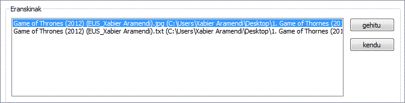
8 Irudia: Gehitu eta kendu eranskinak botoi hauekin.
EIG-ren bigarren hegatsean eranskinak hegatsa, agiri bat gehitu dezakezu + botoia erabiliz eta hautaturiko eranskina kendu - botoiarekin. Eranskin bat hautatzen denean hegats honetako beste aginteak eskuragarriak izango dira. MIME mota bat hautatu behar duzu eranskin bakoitzarentzt, baina azalpena aukerazkoa da - baina ideia hona da betik jartzea azalpen bat. Honek errazagoa egiten die besteei jakitea zer erantsi duzun Matroska agiri honetan.
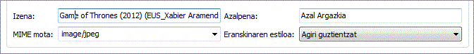
9 Irudia: Ohiko aukerak eranskin batentzat
Azken aukera, eranskin estiloa, irteera agiria agiri askontan
banantzen duzunean bakarrik aztertzen da.
(bananketa orokorrean hurrengo atalean azaltzen da
Agiri guztientzat aukera hatutazen bada oraingo agiria sortutako
irteera agiri guztiei eransten zaio. Lehenean bakarrik hautatzen bada
agiria sortutako lehen irteera agiri eransten zaio.
Hirugarren hegatsa, Orokorra, aukera pakete oso bat da agiri guztiari ezartzeko eta ez bide bat edo gehiagori.
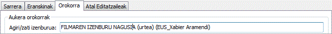
10 Irudia: Filmarentzako izenburua hautatzea
Agiri/zati izenburua: Hau da oraingo filmak erabiltzen duen
izenburua, adib. 'IZENBURU NAGUSIA'.
Bananketa atalak irteera agira nola agiri txikiago
ugaritan banantzen den kudeatzen du. Bananketa ez bada hautatzen
agiri handi bakar bat sortzen da. Bananketa gaitzen bada
mkvmerge-ri esan ahal diozu irteera agiri berri bat hasteko oraingo
agirian adierazitako datu kopuru bat idatzia izan denean edo adierazitako
denbora-kode bat erdietsitakoan. Onartzen diren heuskarriak dira:
OO:MM:SS.nnn
bederatzi zenbakirekin nanosegundu zehaztasunerako edo zenbaki bat
's' hizkiaz jarraiturik segundu zenbatekoa adieraziz.
Denbora-kode ugari sartu daitezke kakotxaz bananduta.
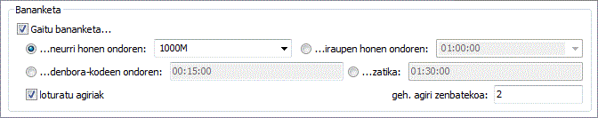
11 Irudia: Ohiko aukerak bananketarako. Sortu bi agiri
gutx-gorab. 1000 MB-ko handitasuna edo iraupen zehatz bat izango dutenak.
Ez loturatu: Aukera honek agintzen du nola mkvmerge-k
kudeatuko duen bananketa. Azalpen txiki bat ezaugarri honetaz:
Matroskak agiri loturatzea sostengatzen du, honek esanahi du adierazitako agiri bat oraingo agiriaren aurrekoa edo ondorengoa dela. Zehatza izateko, egitan ez dira agiriak loturatzen baizik Matroska zatiak. Agiri gehienek zihurrenik Matroska zati bakar bat izango dutenez bakarrik diot 'agiri loturatzea' esan beharrean 'zati loturatzea' egokiagoa litzakeena.
Zati bakoitza 128 bit zabalerako zati UID batez ezagutarazten da. UID hau berezgaitasunez sortzen du mkvmerge-k. Loturatzea lehenik zati UID-ak aurreko/hurrengo agiriaren zati idazburu argibideen barnean jarriz egiten da. mkvinfo-k UID hauek irarkitzen ditu aurkitzen baditu.
Agiri bat txikiago ugaritan banantzen bada eta loturatzea erabiltzen bada
denbora kodeak ez dira 0-ean hasiko berriro baizik eta azken agiriak
amaitutako tokian jarraituko du. Honela orotarako denborari heusten zaio
aurreko agiria eskuragarri ez egonda ere (adib. jariotzerakoan). Loturatu gabe
erabiltzen bada denbora kodeak 0-ean hasi beharko du agiri bakoitzean. Berez
mkvmerge-k ez dut agiri loturatzerik erabiltzen irakurgailu batzuek oraindik
ez dutelako loturaturiko agiriak egoki kudeazen. Loturatzea nahi baduzu
loturatu agiriak hauta kutxan gaituz egin dezakezu.
Bananketa eraginda egon edo ez erabiltzaileak mkvmerge-ri
esan ahal dio loturatzeko sortutako agiria adierazitako UID-tara.
Hau egiten da zati UID baliozko bat sartuz bi sarrera kutxatan,
Aurreko zati UID-a eta Hurrengo zati UID-a.
Aukera honek zati UID bat mkvinfo irteera heuskarrian onartzen du:
16 zenbaki hexadezimal 0x00 eta 0xff artean bakoitza '0x'-rekin
aurrezenbakitua eta tartez bananduta, adib. 0x41 0xda 0x73
0x66 0xd9 0xcf 0xb2 0x1e 0xae 0x78 0xeb 0xb4 0x5e 0xca 0xb3
0x93. Aukeran forma laburrago bat erabili daiteke: 16
zenbaki hexadezimal 0x00 eta 0xff artean '0x' aurrezenbaki gabe
eta tarte gabe, adib. 41da7366d9cfb21eae78ebb45ecab393.
Bananketa erabiltzen bada lehen agiria sarrera kutxan emaniko
Aurreko zati UID-a-rekin loturatzen da, eta azken agiria
sarrera kutxan emaniko Hurrengo zatia UID-a-rekin loturatzen da.
Bananketa ez bada erabiltzen irteera agiri bat loturatuko da bi UID-tara.
Bilatu botoiarekin irteera agirira gehitzeko agiriak hautatu ditzakezu. Atalei buruzko azalpen osoa bat aurkitu daiteke hemen: Atal editatzaile atala..
Sarrera kutxan bide bakoitzarentzat hautatu ditzakezun etiketekin ez bezala hemen hautaturiko etiketek bide UID-ak eduki behar dituzte. Etiketa hauek ez dira berezgaitasunez bide bati esleitzen. Kasu guztien %99-an hau EZ da erabiltzea nahi duzun aukera!
Azalpen oso bat aurkitu daiteke mkvmergeren agiritzan.
Behin gauza guztiak ezarrita multiplexaketa garapena hasi daiteke.
Egin behar den azken gauza nora multiplexatu adierazi da.
bilatu botoiarekin irteera agiria hautatu dezakezu. Hau eginda gero
sakatu Hasi multiplexaketa botoia edo hautatu sarrera berdina
Multiplexaketa menutik.
Dena zuzen ezarri bada mmg-k multiplexaketa elkarrizketa erakutsiko du. Garapena goiko aldean erakusten da, orokorrean mkvmerge une horretan egiten ari denaren azalpen bat da.
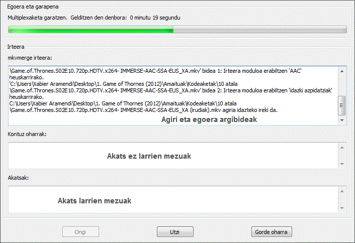
12 Irudia: Multiplexaketa leihoa
mkvmerge-k hiru 'larritasun maila' ezagutzen ditu bere mezuetan: egoera jakinarazpenak, kontuz oharrak, eta akatsak. Egoera jakinarazpen mezu guztiak leihoaren goiko aldean erakusten dira. Honek barneratzen ditu aurkitutako bide motak eta beste gauza interesgarri batzuk.
Kontuz oharrak erdiko leihoan erakusten dira. mkvmerge-k ez du garapena uzten kontuz ohar batekin, baina bidea multiplexatzea gelditu dezake oharra irarkitzeko. Harreta handia jarri behar diezu kontuz ohar guztiei.
Akatsak beheko leihoan erakusten dira. Akatsak betik dira larriak, eta mkvmerge-k multiplexaketa geldituko du akats mezua irarkitu ondoren. Mezua izan daiteke diska gogorra beteta dagoela edo iturburu agiria hondatuta eta ezin daitekeela jarraitu.
Utzi botiak mkvmerge-ri multiplexaketa gelditzeko
seinalea bidaltzen dio. mkvmerge amaiera gabeko bigiztaren batean
katiaturik gelditu ez bada botoia sakatu eta laister geldituko da.
Gorde oharra-rekin mkvmerge-tiko irteera osoa gorde
dezakezu idazki agiri batean gehiago aztertzeko edo matxuara bat aurkitu
eta niri bildatzea nahi baduzu argibide gehigarri bezala.
Zure aukera ezarpen lan gogorra ez dago zergaitik galdu programatik irtetzen zarenean.
Zure multiplexaketa ezarpen guztiak gorde ditzakezu idazkian ohinarrituriko
itxurapen agirietan Gorde ezarpenak aukerarekin
Agiria menuan dagoena eta gero leheneratu Gertatu ezarpenak
aukera erabiliz. Berezko hedapena .mmg da eta arrunt
beste programek ez dute erabiltzen. Hedapen hau elkartu dezakezu ere
mmg-rekin horrela berezgaitasunez gertatzen ditu ezarpenak deitua
bada ezarpen agiriak duen izen berarekin.
Agiri asko badituzu multiplexatzea nahi dituzunak ez duzu lehen agiria gertatu behar, itxaron honek multiplexaketa amaitu arte, gertatu bigarrena, itxaron honek multiplexaketa amaitu arte, etab. mkvmerge EIG-k lan kudeatzaile bat du lan osoak lerrokatu ditzakeenak eta bata bestearen ondoren abiarazi zure beharren arabera. Lan kudeatzailea erabiltzeko ohinarrizko urratsak dira:
Gehitu lan lerrora botoia eta hautatu lan honek izango duen izena.Kudeatu lanak hautatuz
Multiplexaketa menuan.Hasi botoia.
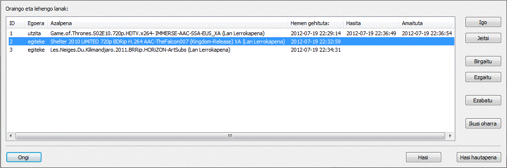
13 Irudia: Lanen kudeaketa elkarrizketa
Lan bakoitzak sei ezaugarri ditu: ID bat berezgaitasunez hautatzen duena
mkvmerge EIG-k; egoera (egiteke - oraindik multiplexatu ez bada,
eginda - multiplexaketa ongi osatu bada,
eginda kontuz oharrekin - multiplexaketa ongi osatu da baina
oharrak egon dira, hutsegitea - multiplexaketa garapenak huts egin du);
aurretik sartu duzun izena; ordua eta eguna lana lan lerrora gehitua izan denekoa;
multiplexaketa lan hau hasi den ordua eta eguna eta multiplexaketaren amaiera ordua eta eguna.
Aginte orokorrak beheren kokaturik daude. Hasi
botoiak multiplexaketa garapena hasiko du beren egoera egiteke duten lan guztientzat.
Hasi hautapena botoiak multiplexaketa garapena hasiko du hautaturik dauden
lan guztientzat beren egoera kontuan izan gabe.
Eskuineko botoiek hautaturiko lan guztiak maneiatzen dituzte.
Igo eta Jeitsi-k hautaturiko lana gora eta behera
mugitzen dute zerrendan. Birgaitu botoiak lanaren egoera
egiteke moduan ezartzen du, hortaz abiarazia izango da
Hasi botoia sakatzen den hurrengoan. Ezgaitu botoiak
lanaren egoera eginda-n ezartzen du.
Multiplexaketa garapenean zehar mkvmerge-ren irteera ez da erakutsiko baina bai gorde.
Lanen irteera ikustea nahi baduzu Ikusi oharra botoia sakatu dezakezu.
Hau erabilgarria da kontuz oharrekin osatutako lan baterako edo erabat huts egiten badu.
mmg-ren ezaugarri berrietako bat ezagugarri-osoko atal editatzailea da. Idazki ohinarriko atal agiriak irakurri ditzake, atalak inportatu Matroska agirietatik, idazki ohinarriko atal agiriak idatzi hautatu daitezkeenak hegats orokorrean eta atalak zuzenan idatzi Matroska agirietan.
Beste sistema askok ez bezala Matroskak nested atalak sostengatzen ditu. Honek ohinarrian esanahi du atalentzako azpi atalak zehaztu ditzakezula.
Atal bat Matroskan gutxienez lau gaitan biltzen da: Bide UID-a ezartzen dena, atal izenburu/izenean, hau hasiera denbora eta berari elkarturik dagoen hizkuntza kodea da. Gai gehigarriak aukerazkoak dira eta barneratzen dute amaiera denbora, hizkuntza kode eta herrialde kode gehiago. Arrunt erabiltzaileak nahitaezko gaiak bakarrik beharko ditu. Hauetan bakarrik adierazi dezake izena, hasiera denbora eta hizkuntza kodea. mkvmerge-k berezgaitasunez esleituko dizkio atal guztiak agiri osoari.
Lehen adibidea arrunta da. Filmak lau atal ditu: Hasierako irekiera, lehen agerraldia, bigarren agerraldia, eta kreditoak. Ohartu amaierako denbora-irarketak aukerzakoak direla.
Irekiera (hasiera 00:00:00, hizkuntza Basque)
Ager 1 (hasiera 00:01:00, hizkuntza Basque)
Ager 2 (hasiera 00:05:30, hizkuntza Basque)
Kreditoak (hasiera 00:12:20 amaiera 00;12:55, hizkuntza Basque)
Adibide zailago bat azpi atalekin. Honek hartzen du Ludwig van Beethoven-ren Fidelio abes-antzerkia. Laburbiltzeagaitik bi agerraldiren lehen hiru piezak bakarrik sartzen ditut.
Lehen agerraldiak du:
Lehen agerraldia, gure lehen atala izango dena, 11:20-ko luzera du. Gure bigarren agerraldiak 17:060-ko luzera du. Atal hau horrela ikusiko da:
Lehen Agerraldia (hasiera 00:00:00 amaiera 00:11:20, hizkuntza Basque,
herrialdea Basque Country)
Irekiera (hasiera 00:00:00 amaiera 00:06:24, hizkuntza
Basque, herrialdea Basque Country)
Aria: 'Orain, maitea, bakarrik gaude'
(hasiera 00:06:24 amaiera 00:11:10, hizkuntza Basque, herrialdea Basque Country)
Elkarrizketa: 'Jakino gaxoa' (hasiera 00:11:10 amaiera 00:11:20,
hizkuntza Basque, herrialdea Basque Country)
Bigarren Agerraldia (hasiera 00:11:20 amaiera 00:28:26, hizkuntza Basque,
herrialdea Basque Country)
Irekiera eta Aria: 'Jainkoa! zer ilun dagoen hau!'
(hasiera 00:11:20 amaiera 00:22:06, hizkuntza Basque, herrialdea Basque Country)
Melodrama eta Duetoa: 'Zer hotza egiten duen' (hasiera 00:22:06
amaiera 00:27:27, hizkuntza Basque, herrialdea Basque Country)
Elkarrizketa: 'Iratzartzen ari da!' (hasiera 00:27:27 amaiera 00:28:26,
hizkuntza Basque, herrialdea Basque Country)
mkvmerge-k eta mmg-ren atal editzaileak biak sostengatzen dituzte heuskarri ezberdinak atal agirentzat.
Heuskarri ohinarrizkoenetako bat OGM agirietan erabiltzen dena da. Hau idazki ohinarriko heuskarria da. Atal sarrera bakoitzak bi lerro ditu, lehenak hasiera denbora du, bigarrenak atalaren izenburua/izena. Lerro guztiak zenbakiturik daude.
Goikoaren lehen adibidea heuskarri honetan adierazten da:
CHAPTER01=00:00:00.000
CHAPTER01NAME=Irekiera
CHAPTER02=00:01:00.000
CHAPTER02NAME=Ager 1
CHAPTER03=00:05:30.000
CHAPTER03NAME=Ager 2
CHAPTER04=00:12:20.000
CHAPTER04NAME=Kreditoak
Bigarren adibidea ezin da heuskarri honetan adierazi ez dituelako sostengatzen ez hizkuntza bereizitasunak ez amaiera denborak edo nested atalak. Aurrerapena da agiri hauek sortzeko oso errazak direla eta tresna ugari daudela eskuragarri bietarako Windows-erako eta Unix/Linux-erako agiri hauek zuzenean DVD-tatik sortzeko
Bere mugak dituelako mmg-k ezin ditu atalak heuskarri honetan atera.
XML ohinarriko atal heuskarri bat sortu dut Matroskak erabiltzen duen sistemaren oso hurbilekoa. Heuskarri honekin osoki agindu dezakezu ezaugarri guztietan. Ez dut xehetasunez azaltzerik nahi heuskarri hau hemen. Mesedez bota begirada bat mkvtoolnix-rekin datozen XML atal agiri adibideei.
Atal editatzaileak zuzenean irakuri ditzake atalak Matroska agirietatik. Hauek XML atal agirietan idatzi daitezke edo Matroska agiri berdinean berriro edo beste Matroska agiri batean. Ezaugarri guztiak daude sostengaturik
Atal editatzaileak hiru alde ditu: atal guztien zuhaitz ikuspegia, atal sarrerak gehitzeko edo kentzeko erabiltzen diren lau botoiak, eta atal sarreren datuak ezartzeko erabiltzen diren sarrera kutxak.
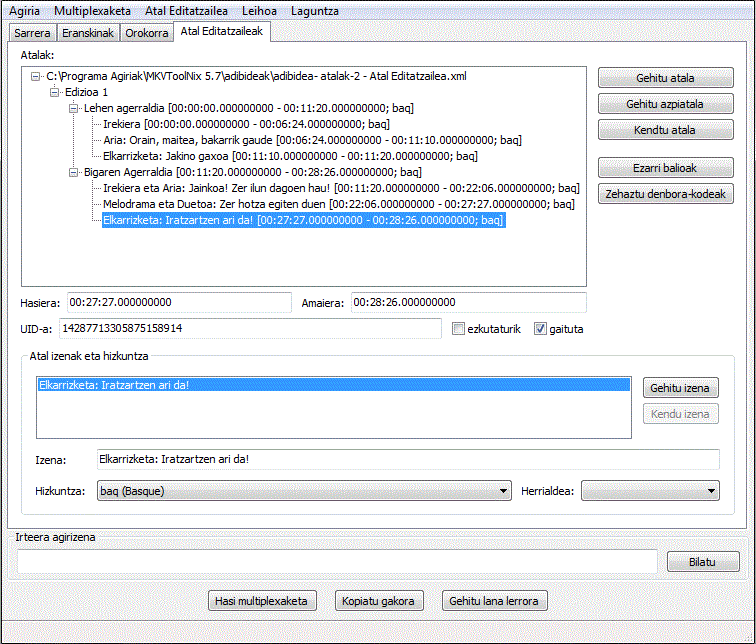
14 Irudia: Atal editatzailea gaineko adibidea erakusten
Matroska agirietan atal bat zehazten da hasiera denbora, izen bat eta izenarekin elkartzen den hizkuntza batez. Izen ugari izan ditzakezu atal batentzat eta bakoitza hizkuntza ezberdin batekin elkarturik. Amaiera denbora bat ere gehitu dezakezu, baina ez da nahitaezkoa.
Atal agiri berri bat Berria aukerarekin abiarazten da
Atal editatzailea menutik. Atal berri bat gehitu dezakezu
Gehitu atala edo Gehitu azpiatala botoiekin.
Bi botoi hauen arteko aldea da Gehitu atala hautatzen denean
atal berria zuzenean hautaturiko atalaren ondoren gehitzen duela maila berean,
eta Gehitu azpiatala aukerak atal berri bat gehitzen du
hautaturiko atalaren azken tokian.
Kendu atala kontuz erabili behar da. Azpizuhaitz osoa kentzen du
baieztapenik galdetu gabe, eta ez dago desegin aukerarik eskuragarri oraingoz.
Atal sarrera hautatu ondoren bere datuak aldatu ditzakezu.
Hasiera eta amaiera denbora heuskarria izan daiteke OO:MM:SS.mmm
edo OO:MM:SS bakarrik. Atal baten izena jadanik gehitutakoan.
Hau editatu dezakezu eta zein hizkuntzatan ematen den hautatu.
Honela izenak hizkuntza anitzetan eman ditzakezu, adib. 'The hero arrives'
'eng' hizkuntza bezala duela eta 'Hurena badator' 'baq' hizkuntza bezala duela.
Besterik gabe sakatu Gehitu izena botoia sarrera gehiago behar badituzu
eta Kendu izena bat kentzea nahi baduzu.
Atal asko sortzea eta betik hizkuntza aldatzea lan handia izan daiteke.
Hortaz mmg-k berez gehitu behar duen hizkuntza eta herrialde etiketa hautatu ditzakezu
Ezarri berezko balioak menu sarrerarekin Atalak menuan.
Ezarri balioak botaiak antzeko zerbait egiten du. Honekin hizkuntza bat
eta/edo herrialde bat ezarri dezakezu unean hautaturiko sarreran eta bere mendeko denentzat.
Atalak XML agirietan gordetzea Gorde edo Gorde honela-rekin egin daiteke.
Gorde honela ezin da erabili atalak idazteko badagoen Matroska agiri batean
- horretarako Gorde Matroska agirian erabili behar duzu.
Badauden atal agiriak edo atalak Matroska agirietatik gertatu ditzakezu
Gertatu aukera hautatuz Atal editatzailea
menuan. mmg-k berezgaitasunez atzemango du erabilitako agiri mota eta atalak irakurriko ditu.
mmg ezaugarri editatzaile bat Matroska agirietako idazburu eremuentzat. Abirarazi daiteke mmg-ren "Agiria" menutik "Idazburu editatzailea" hautatuz.
Idazburu editatzaileak erabiltzaileari ahalbidetzen dio editatzea bide bakoitzaren zati argibide idazburu eremuetako batzuk eta idazburuak agiria berriro multiplexatu behar izan gabe. Bere erabilpena arrunta da: gertatu agiri bat, hautatu aldatzea nahi dituzun idazburu eremuak, aldatu beren balioak eta gorde agiria.
Matroska agiri heuskarriak ahalbidetzen du idazburu eremu gehienak egotea edo ez egotea. mmg-ren idazburu editatzaileak sostengaturiko idazburu eremu guztien sarrerak erakutsiko ditu baita unean agirian ez badaude ere. Erabiltzaileari ahalbidetzen dio unean agirian ez dauden eremuak gehitzea agirira eta unean agirian dauden eremuak kentzea.
Erabiltzailea agiri bat editatzen hasi daiteke "Irei" hautatuz "Agiria" menutik. Agiri egokia hautatu ondoren idazburu editatzaileak agiria mihatuko du osagai garrantzitsu guztien bila. Honek denbora apur bat hartu dezake agiriaren neurriaren arabera. Hau beharrezkoa da Matroskaren agiri egitura malgua delako.
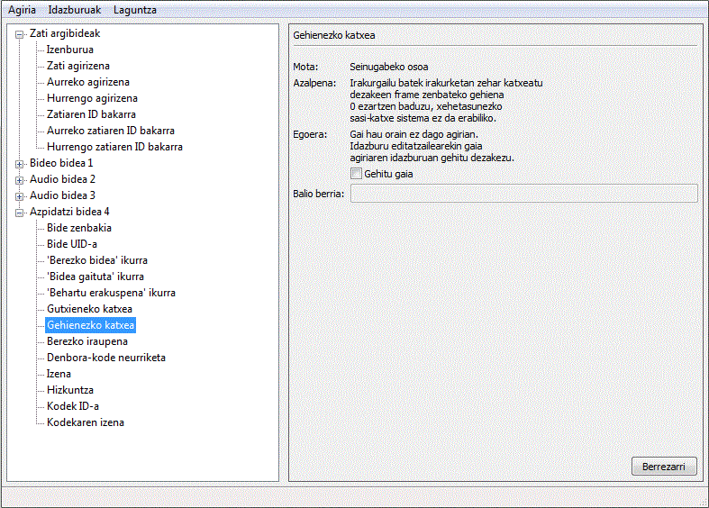
15 Irudia: Idazburu editatzailea
Agiria ireki ondoren ezkerreko panelak gai bat erakutsiko du zati idazburuentzat eta gai bat agirian aurkitu den bide bakoitzeko. Zuhaitzeko elkargune bakoitzak azpigai zenbateko bat du oraingo idazburu balioa adierazten duena. Erabiltzaileak azpigai bat hautatzen duenean eskuineko panela eguneratu egiten da gaiari buruzko gertaera zenbait erakusteko.
Balio mota gehienak bere azalpena dira: zenbakiak, kateak, etab. Horrela ere binario mota zenbaki hex. sekuentzia bat bezala erakusten dira. Onarturiko heuskarriak mkvmerge-ren zati UID-ak adierazteko aukera ugarien berdinak dira: izan daiteke zenbaki hex. sekuentzia arrunt bat (adib. 1857a7fe7d...) edo zenbaki hex. bat "0x"-rekin aurrezenbakiturik pare bakoitzaren aurretik (adib. 0x18 0x57 0xa7 0xfe 0x7d...).
Erabiltzaileak bere aldaketak balioztatu ditzake "Balioztapena" hautatuz "Idazburuak" menutik. Balioztapena berezgaitasunez ere abiarazten da erabiltzaileak agiriak gordetzea nahi dituen bakoitzean. Balioztapenak zihurtatzen du erabiltzaileak ordeztu dituen balioak bere gaian biltegiratu direla. Adibidez zenbaki gai batek ez ditu hizkiak izan behar.
Balioztapeank huts egiten badu balioztapenean huts egin duen lehen gai hautatzen da erabiltzaileak akatsa zuzendu ahal izan dezan.
Erabiltzaileak aldaketak gorde ditzake "Gorde" hautatuz "Agiria" menutik. Ez bada aldaketarik egin mmg-k esango du eta ez du agiria aldatuko.
Agiria aldatu aurretik mmg-k egiaztatuko du agiria beste aplikazioren batek aldatu duen ireki zen unetik. Horrela izan bada mmg-k erabiltzailea ohartaraziko du, aldaketa guztiak baztertu eta agiria birgertatuko du zihurtatzeko agiria ez dela hondatuko.
mmg gogor saiatzen da aldatutako idazburuak idazteko tokiak bilatzen. Dauden idazburu gaiak gainidatziko ditu beren jatorrizko tokian, EbmlVoid gaiak eta aurkitzen dituen beste idazburu eskabide guztiak bezala. Meta bilaketa buruak ere eguneratuko ditu beste aplikazioek idazburuak erraz aurkitu ahal izateko agiria irakurriz.
Agiria gorde ondoren idazburu editatzaileak berezgaitasunez birgertatuko eta aztertuko du berriro. Hau egiten da zihurtatzeko ez dela agiri hondatzerik gertatu. Honek agiria gordetzea nabarmen moteltzen duenez segurtasun ezaugarri hau mmg-ren etorkizuneko argitalpenetan kendu egingo da nahikoa azterketa eginda dagoenean.